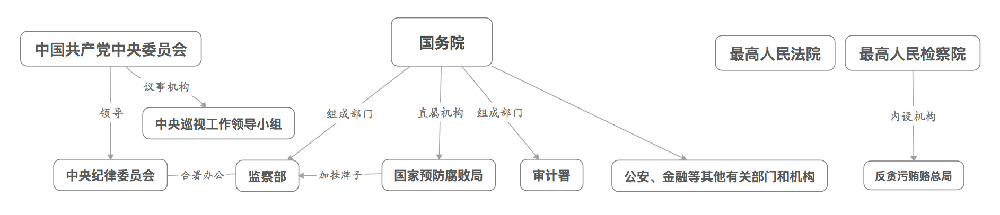
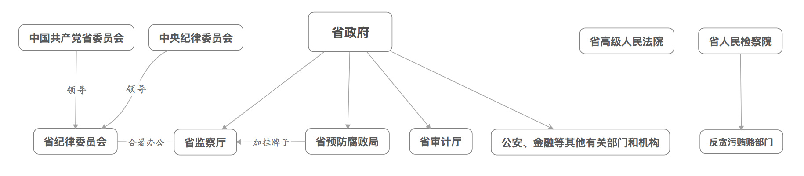

本文致力于阐述中国的现代反腐制度及其运行模式，但由于作者能力着实有限，也非相关专业，故所述内容大多源自网络和相关论文。
腐败的定义
腐败是政治毒瘤，古今中外任何一个政党或政权的垮台都和腐败有关。习近平总书记就曾告诫全党：“大量事实告诉我们，腐败问题越演越烈，最终必然会亡党亡国！”
究竟什么是腐败？
美国政治学家米彻尔·约翰斯顿指出：“在反腐败问题的讨论中，没有哪个问题像腐败的定义这样长期争论不休，也没有哪个问题像腐败的定义这样在那些具有重要意义的讨论中经常占据优先的位置。”
美国政治学家约瑟夫·尼尔认为：“腐败是为私人、家庭成员或私人小圈子获取金钱、身分而背离公共角色的规范职责的行为，或违反那些旨在防止滥用私人影响以谋取私利的规则的行为。腐败包括贿赂（以物质腐蚀某一职位占有者以影响他的判断）、裙带关系（基于私人关系而不是按照人的品德提供庇护）和盗用（为个人目的非法盗用或侵占公共资源）。”
国际货币基金组织和国际透明组织这样定义腐败：滥用公众权力谋取个人或亲近的人的利益。
我国在《刑法》第八章定义了“贪污贿赂罪”，但并没有腐败的定义。第三百八十二条规定：国家工作人员利用职务上的便利，侵吞、窃取、骗取或者以其他手段非法占有公共财物的，是贪污罪。第三百八十五条规定：国家工作人员利用职务上的便利，索取他人财物的，或者非法收受他人财物，为他人谋取利益的，是受贿罪。
中国现代反腐制度
反腐制度
反腐败是从中国共产党执政之日起就被提上议事日程的。反腐领域曾有‘三反’、‘五反’、‘新三反’、‘社教’等诸多实践，它们均以政治运动的形式开展。然而，三番五次的运动在很大程度上并未触动滋生这种贪污腐败现象的根基和土壤，也缺乏持久稳固的约束力。自新中国成立以来，中国从动员式的运动反腐逐渐迈向了主动式的制度反腐——防腐反腐的常态化和长效化，凸显了中国共产党领导并紧紧依靠广大的人民群众厉行廉政、与腐败作长期斗争的坚定决心和理性认识。中国共产党依据宪法和法律领导全中国的反腐工作，下图所示为反腐机构体系。


中共纪律检查机关
中共纪律检查机关俗称“纪委”、“纪检委”的中国共产党各级纪律检查委员会，是党内监督的专门机关。
纪委由同级党代会选举产生。其后，纪委举行全体会议，选举常委、书记、副书记。纪委书记在党内是重要职位，中纪委书记是中央政治局常委，省纪委书记一般均为省委常委，市、县亦然。中纪委在党的中央委员会领导下工作，地方各级纪委则要接受双重领导：一重是同级党委会，另一重是上级纪委。
在整套反腐体系中，它是发挥组织协调作用的关键部门。作为党的机关，纪委的监督对象是党员。
政府检查机关
纪委属于党，监察机关则属于政府。在中央一级，国务院组成部门中设有监察部；在省级和市、县级政府，分别设有监察厅和监察局。从中央到地方，纪委和监察机关都采取了“合署办公”的方式。它们用一套工作机构、两个机构名称，履行两种职能。
“合署”也表现在领导上：监察部部长同时是中纪委副书记，地方监察机构的负责人一般也由纪委副书记兼任。
作为政府的机关，主要监察行政机关及其公务员。纪委监督党员，监察机关则监察行政机关及其公务员。换言之，监察机关不能监察党的机关、人大机关、政协机关、审判机关、检察机关及其公务员。
审计机关
审计机关是对经济领域腐败的预防和惩处中不可或缺的一环。
如同纪委，审计机关也实行“双重领导”，同时对本级政府和上级审计机关负责并报告工作，审计业务以上级审计机关领导为主。
从作为国务院组成部门的审计署，到地方政府的审计厅、审计局，这些机构的审计工作对象主要是机构的财务收支，包括国务院各部门、地方各级政府及其部门、国有金融机构和国有企业事业单位等。此外，国家机关等单位的主要负责人个人也是审计的对象。
预防腐败局
这是反腐体系中最年轻的一个部门，它成立至今仅有八年多的时间。除中央层面外，预防腐败局仅在部分省区市成立。
国家预防腐败局属于国务院直属机构，与国家林业局、国家统计局等级别相当。目前，国家预防腐败局的存在形式是在监察部“加挂牌子”,也即在一个实体单位上增加一个名称，由同一套领导班子兼任。其局长由监察部部长兼任，副局长中的一位由监察部副部长兼任，同时另设一位副部级专职副局长主持日常工作。
它的职责是统筹全国的预防腐败工作，并负责预防腐败的国际合作和技术援助。
国家司法机关
在反腐体系中，对腐败行为的惩治，最终要依赖法院和检察院这两大司法机关来实现。法院和检察院也被称为“两院”，与政府的“一府”并称。
法院院长和检察长，均是同级人大选举而来。不过，最高法的院长和最高检的检察长候选人均由中共中央向全国人大主席团建议。
检察院的职责是侦查职务犯罪、代表国家提起公诉，之后法院依法审判。不过，检察院的工作还包括预防职务犯罪等。
此外，这两套部件中的级别最高者即最高人民法院和最高人民检察院，还可以通过司法解释等方式，对贪污贿赂渎职等腐败案件的审判、检察工作进行指导。
其他机构
公安、金融等其他有关部门和机构是相对处于外围但重要的组成部分，它们在自身职责范围内，依法承担反腐败和廉政建设的相关工作。
运行模式
反腐运行模式按照功能可划分为两种:预防和惩治。具体在每一种模式中，又有可以分别供不同的政治和社会力量参与使用的功能分项。
预防模式
近些年来的反腐体系开发思路，越来越强调在启用“惩治“模式之前，首先尽量使用“预防”模式。
教育。邓小平在回答美国记者提问如何解决少数贪污、腐化和滥用权力的现象时指出:“我们主要通过两个手段来解决，一个是教育，一个是法律。”教育是预防模式中的重要功能，主要发起者是纪委，但参与的角色众多。教育功能是贯穿始终且频繁出现的。廉洁从政教育已经被普遍纳入教学计划，成为各级领导干部的必修课程。在一些地方，领导干部选拔前还需要进行廉政法律法规考试，任用前要进行“廉政谈话”。
实际上，教育功能已经延伸至普通大众当中。也就是说，在一名官员还没有进入体制，甚至还在上学的时候，就会成为反腐教育的对象。
监督。监督既是预防模式的重要构成部分，又可能成为惩治模式的起点。监督包括党内监督、人大监督、政府内部监督、政协民主监督、司法监督、公民监督、舆论监督、信息公开。
惩治模式
在惩治模式中，各机构之间将发生互动与配合，往往表现为一连串的功能组合。邓小平明确指出：“从党的工作来说，重要是端正党风，但从全面来说，是加强法制，还是要靠法制，法制靠得住些。”法制的一大目的即惩治。
检查机关。纪委在通过各种监督途径掌握党员违纪线索之后，展开调查，最经常被提及的手段是“双规”，即“要求有关人员在规定的时间、地点就案件所涉及的问题作出说明”。“双规”并非司法程序，仅县级以上纪检部门才可以使用，且有较为严格的启动程序。涉嫌犯罪的党员，则需要移送司法机关处理。
监察机关。与“双规”相对应的是“双指”，即“责令有违反行政纪律嫌疑的人员在指定的时间、地点对调查事项涉及的问题作出解释和说明”。“双指”由监察机关使用，对象是涉嫌违反纪律的公务人员，基本是中共党外人士。政府监察机关对于违反政纪的监察对象，作出相应政纪处分；同样，涉嫌犯罪的，移送司法机关处理。
执法机关。公安、审计、行政执法机关也可以启动惩治模式。以审计机关为例，在审查账目、查找漏洞之后发现的腐败线索，将重点予以追踪审计。一旦查实，对审计机关处理权限内的腐败行为，将以下达审计决定的方式直接作出通报批评、罚款和没收非法所得等处理；对处理权限以外的腐败行为，则移送纪检、监察或司法机关处理。
司法机关。人民法院、人民检察院也能启动惩治模式。当它们在履行的职责过程中发现犯罪嫌疑人涉嫌违犯党纪或政纪的，将有关证据材料移送党的纪检机关或政府监察机关处理。
总结
总体来看，中国现代反腐制度是具备丰富反腐主体的体系，但庞杂、低效、相互冲突等副作用随之而来。在相对完备的反腐制度下，值得深究这样的疑问：为何如此众多的机构或部门都难以堵住腐败？中国现代反腐制度堪称丰富，但制度内部以及制度之间的严密性和制度执行的彻底性都较为欠缺，导致贪腐人员发现制度存在的漏洞并以此行贪腐之欲。
反腐机构的独立性也是影响反腐效果的关键因素。目前，地方各级纪委则要接受同级党委会和上级纪委的双重领导，也即纪委并非独立机构。有两个方式保证纪委的独立性，一是加强纪委的垂直领导，甚至将纪委直接改为仅由上级纪委领导；二是将纪检干部的人事任免权等收归上级纪委掌握，削弱同级党委对纪委独立性的影响。
审计机关也面临本级政府和上级审计机关双重领导而导致独立性欠缺的问题。虽然审计机关可以启动整套惩治流程，但在双重管理制度之下，各级审计机关的领导均由地方政府任免，经费由地方财政供给，因此，当审计发现问题时顾虑重重，整套流程可能遭遇阻力无法启动或难以运行下去。
此外，监察机关的职能是监察行政机关及其公务员，但同时隶属于行政权序列并向同级行政首长负责。作为对行政机关和行政首长开展监察的专门机关，应隶属各级人大，如此其独立性也有了保证。
中国三十多年没走出反腐的困境就是因为搞的都是同体监督，就像再锋利的刀锋也砍不了自己的背，必须通过异体监督才能解决这个问题。异体监督也即监督的主体应是具有独立性的。在香港，一个独立机构廉政公署成为腐败的防火墙。虽然香港模式不适于地广人多的中国大陆，但是可借鉴其保持反腐机构独立的经验。
基于以上论述，可以指出的是，中国现代反腐制度的当务之急是使反腐机构保持独立性和得到充分的授权。
注意，本文许多内容摘自或改自序号为五的参考文献。
参考文献
[1] 孙桂珍. 对完善反腐制度的思考[J]. 经济研究导刊, 2015(6): 321–322.
[2] 于风政. 论 “腐败” 的定义[J]. 新视野, 2003(5): 40–42.
[3] 胡鞍钢. 中国: 挑战腐败[M]. 浙江人民出版社, 2001.
[4] 中华人民共和国法律. 中华人民共和国刑法[J]. 维基文库, 2015.
[5] 方可成. 中国式反腐体系说明书[J]. 南方周末, 2013.
[6] 陈雷雷. 论当前中国的腐败问题与制度反腐[J]. 经济研究导刊, 2010(1):217–218.
[7] 中央纪委宣传教育室. 邓小平论党风廉政建设和反腐败[M]. 中国方正出版社, 1998.
[8] 中共中央文献编辑委员会. 邓小平文选[M]. 人民出版社, 1983.
[9] 陶卫华. 李永忠: 十年反腐看五年[J]. 中国民商, 2013(6): 44–46.